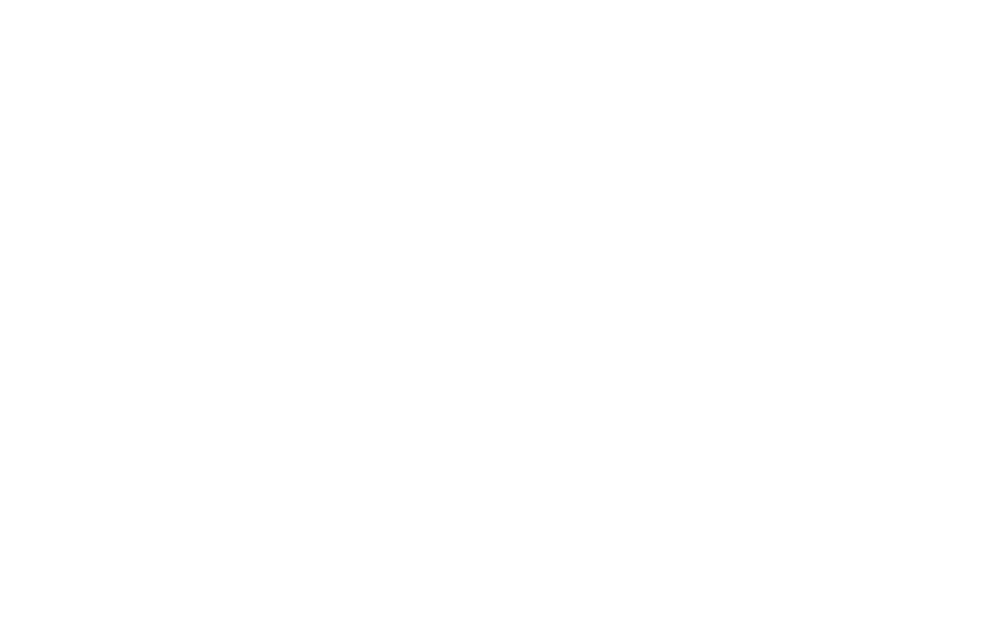

학원관리 시스템 가이드
관리자·선생님·스탭·학부모 — 역할별로 무엇을 보고 무엇을 입력해야 하는지 화면 단위로 정리한 가이드입니다.

이 가이드에서 다루는 것
학원이 매일 만들어내는 출결·진도·점수·수강료·상담 데이터를 한 시스템에서 통합 관리하는 방법을 역할 단위로 안내합니다. 매일 5분, 매주 15분, 매월 1시간만 들이면 학원 전체 운영이 손에 잡힙니다.
역할별 바로가기
👑
관리자 (원장)
학원 전체 데이터 모니터링 + 의사결정. 7개 화면으로 매출·등록·이탈을 본다.
📚
선생님
출결·진도·숙제·점수·관찰을 5분 안에 입력하는 데이터의 출발점.
🖥️
스탭 (데스크)
학생·수강·교재·재무 — 학원의 사람과 돈을 함께 다루는 운영 심장.
👨👩👧
학부모
자녀의 출결·점수·진도를 매일 1분이면 충분히 확인.
읽는 순서 추천
도움이 필요할 때
화면 우하단의 💬 오픈톡 문의 버튼을 누르면 즉시 상담으로 연결됩니다. 마케팅 컨설팅이 필요하면 사이드바 하단 1:1 마케팅 상담을 사용하세요.